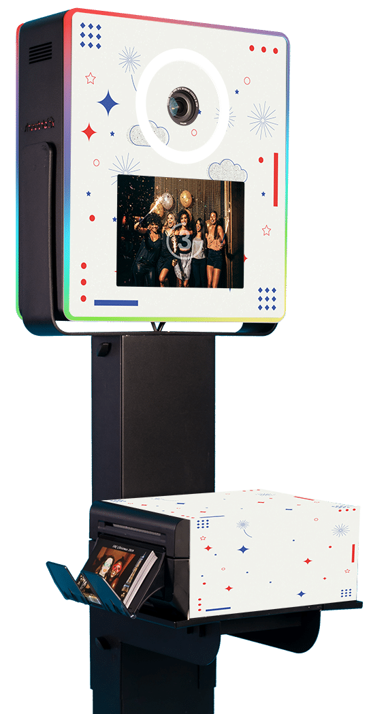

Plus que jamais, la question du local a son importance. Totalement inscrit dans cette philosophie, nous nous appliquons à soutenir le Made in France (fabriqué en France). C'est pourquoi nous fabriquons nos bornes photobooth en France dans notre usine en Normandie ! Recherche et développement, fabrication, intégration et tests sont tous opérés en France, privilégiant toujours le circuit court !
Nous recyclons le consommable inutilisé tel que les bobines photo usagées, et valorisons l'ensemble de notre chaîne de préparation. Le digital n'est pas en reste, grâce notamment au développement de notre propre logiciel photobooth, développé à Paris et à l'hébergement de nos serveurs exclusivement en France.